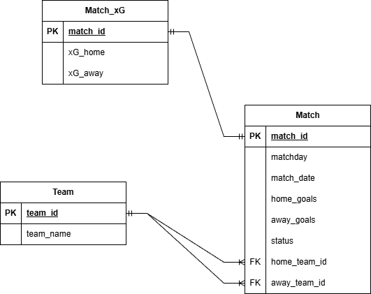

Project Overview
This project involved designing a relational database and automated workflow to support predictive modeling for Premier League matches. The goal was to organize team, match, and expected goals (xG) data into a structured system that allows efficient querying, automation, and preparation for future model improvement.
Problem
Football match data is often split across multiple sources and formats, making predictive analysis difficult without proper structure. This project focused on solving that problem by building a normalized relational database and an SSIS workflow that supports efficient querying, feature extraction, and preparation of datasets for predictive modeling.
Tools & Technologies
My Role & Contributions
- Designed normalized database schema for teams, matches, and expected goals data.
- Imported and validated historical Premier League match datasets.
- Created SQL queries to support predictive feature generation.
- Developed SSIS automation package to execute model workflow.
- Integrated relational database outputs into predictive modeling scripts.
- Tested model performance using completed matchday data.
Implementation
Data was structured into relational tables linked through primary and foreign key relationships. The design separated team information, match details, and xG data into related tables that support historical analysis and feature creation. An SSIS package was then built to automate parts of the workflow, reducing manual effort and supporting repeatable prediction cycles.
Results
- Built an automated analytics workflow for football match prediction support.
- Organized raw sports datasets into a structured relational model.
- Demonstrated the ability to combine database engineering and predictive analytics.
- Created a foundation for future machine learning performance improvements.
Project Screenshots
These screenshots show the database structure, SQL table outputs, and the SSIS automation workflow used in the project.
Entity Relationship Diagram

SQL Table – Team

SQL Table – Match_xG

SQL Table – Match